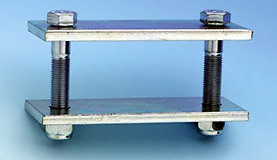
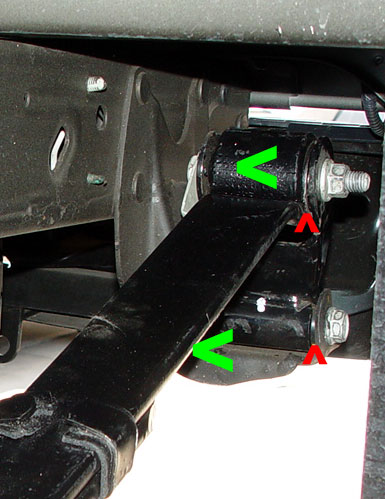

|
The beam axle/leaf spring setup (a "Hotchkiss drive suspension") is stone age. It is directly descended from the horse buggy. It is used for one reason and one reason only - cost. Nonetheless, according to the experts (and lots of dirt track racers), it can work well if set up properly. As stated by Carroll Smith in Tune to Win, "given the beam axle, I really don't care whether it's sprung by by leaf springs or coils--if anything, I lean a little bit towards the leaf simply because the leaf spring inherently provides some lateral and longitudinal axle location while the coil spring does not." I played with calculating all manner of rear suspensions -- parallel 4-link, angled 4-link, Satchell link, 3-link, asymmetrical 3-link, etc. But with the gas tank in the way, it is not easy to get the right geometry in the rear without major chassis surgery. A parallel 4-link with the links outside the frame is relatively straightforward, and provides for great drag strip hook, but can't provide good roll steer or braking characteristics, so it's not the ideal road racing setup. So I decided to explore the limits of the stock Hotchkiss drive suspension. Some of the engineering considerations (as best as my non-engineer mind can understand them) are laid out below. |
||||||||||||||||||||||||||||
|
Axle wrap should be controlled. With
the front-and-rear staggered shocks, Lightnings already have some axle
wrap mitigation. It works. I know this because when I
reversed the passenger shock, I got bad wheel hop instantly. But most Lightning owners control axle wrap with traction bars. |
||||||||||||||||||||||||||||
|
Carroll Smith does not like traction bars because of the wheel hopping caused by their inherent bind, preferring instead to stiffen the front half of the leaf. Tune to Win, p. 157; see also Chassis Engineering at p. 67. This can be done by adding leafs to the front half of the spring only, or by using spring clamps (shown above) or "traction springs" (shown right) on the front half of the axle. Note that our leaves are already front-biased like the leaves shown below in that the mounting point for the axle is moved forward.
|
||||||||||||||||||||||||||||
|
A proper spring rate should be used. This is perhaps the most complicated issue of all. Leaf spring rates are difficult to determine, for several reasons. First, the rate on a multi-leaf spring is determined not only be the number and thickness of leaves, but also by the way the ends of the leaves are machined, by how tightly they fit against each other, and whether there are any anti-friction devices between them. Further, a multi-leaf spring is designed to be progressive, so the rate increases as it is compressed further. Finally, the spring rate changes (stiffens) in cornering as the leaf is twisted. In his section on "sedan" racing, Carroll Smith recommends 200-225 lb leaf rates, which he calls "soft," and recommends leafs with a lot of arch. Smith also recommends at least three inches of bump travel for live axles, preferring that five inches be available. This is obviously a concern for Lightning owners, as most of us with lowered suspensions are dealing with only about 3" or less of axle-to-frame clearance. I don't know what the proper rate is for a Lightning unloaded, and if you want to actually use the truck for hauling things, a spring that can handle a load will be too stiff when it's unloaded. Having removed about 200 lbs from the rear of my truck, my old-spec Hotchkis leafs (278 lbs/in) ride fine with several hundred pounds in the bed, but are punishing when the bed is empty. A comparison of some leaf springs using some leaf spring calculators:
A leaf spring calculator is here. Another is here. I believe these calculators are using the formula to the left. The Hotchkis springs calculate dead on with their advertised rate. Folklore has the stock 99-02 leaves at 185 lbs/in. I don't know why the calculators produce a different result. Similarly, while Belltech tech told me that their leaves are rated at 300 lbs./in., based on .5" thick leaves (measurements from someone else, not Hotchkis), they are essentially Hotchkis springs with another leaf. That's WAY too stiff. |
||||||||||||||||||||||||||||
|
The axle should be laterally located
to prevent side-to-side movement. When the axle moves laterally,
it is never just shifting -- on end is tilting, which causes the rear to
steer on its own. There are several causes of this displacement.
|
||||||||||||||||||||||||||||
|
Second,
the leaf hangers distort. The rear hanger in fact flexes
side-to-side. Ian Schwartz documented this by jacking up the rear
hanger and observing flex. I replicated this by getting under the
truck and pulling on the hanger. I can feel the flex with just
hand pressure.
One solution for this is the pictured "Spyder 2" rear brace from Develop Mental Racing. Another is the elimination of the hangers altogether by using sliders (more below). |
||||||||||||||||||||||||||||
|
But most of the displacement happens at the bushings, especially the rear shackle bushings. On cornering, the leverage of the spring against the shackle causes the bushings to compress and distort. The potential solutions for this are sliders, or stiffer bushings. Carroll Smith recommends urethane spring eye bushings (Tune to Win, p. 156), while Herb Adams states that leaf spring performance can be enhanced with a spherical bearing in the front eye, but to never use urethane bushings on the front eyes, "as they will bind up and prevent the body from rolling in relation to the axle" (Chassis Engineering, p. 68). I'm not sure who's correct. I can see both sides. And it may depend on the application.
|
||||||||||||||||||||||||||||
| But one thing seems certain -- using solid aluminum eyes like those on the Caltracks and Slide-A-Links is out of the question for performance handling. The Afco front spring eye pivots to the right are pretty much the opposite -- they are uniballs that take the place of the front spring eye. But they will only fit Chrysler-type springs with 1 3/8" ID front eyes. Deaver Spring's "Baja Bushings" are the same concept, but with versions for 1.5" eyes and for 40mm eyes. | ||||||||||||||||||||||||||||
|
Another device that will help lateral location is the use of "sliders" rather than shackles. The ones pictured below are standard circle track parts adapted for our trucks by RUSlow (Stan Martin).
According to an Afco white paper: "The angle of the shackle can stiffen or soften a spring's normal rate. The AFCO leaf spring sliders eliminate the up and down movement of the rear spring eye caused by shackles moving through their arcs during suspension travel. Consequently, the rear suspension's loading points displace less during suspension movement. Sliders, depending on their installed angle, generally reduce the shackle effect and provide more consistent spring rates than shackles. . . Since sliders are usually more rigid than shackles, they have less tendency to bind laterally during cornering. In general, sliders improve the handling consistency and predictability of leaf spring equipped race cars."
But the most popular method of controlling lateral displacement is with a panhard rod or a Watts link. More details on panhard theory and application are here. |
||||||||||||||||||||||||||||
|
The effects of roll steer
should be understood.
Zero roll steer would require front
and rear hangers that are parallel with the ground plane. Our
leafs, like most production cars, have a pronounced forward tilt.
This causes roll understeer. Spring wrap on acceleration also causes roll understeer. When powering out of a corner, the outboard spring will twist, which moves that side of the axle forward, causing roll understeer. A little roll understeer is not a bad thing on anything less than a race car. Roll understeer can actually help to stick the back end on corner exit. Tune to Win, pp. 157-58. But roll oversteer must be avoided at all costs, especially on an overpowered, front-heavy truck. |
||||||||||||||||||||||||||||
With all of the above in mind, this
is what version 3.0 of
my rear suspension is
looking like:
Note that the spring rate of a composite leaf in the real world is less than its nominal rating would suggest, compared with a steel leaf. Flex-A-Form uses the rule of thumb that a composite spring is 20% softer than a steel spring for any given rate. So the 235 lb. springs should compare to the 185 lb. stock rate. But the stock multi-leafs are highly progressive, and the composites have a linear rate, so the composites will get relatively softer as the compression load increases. This should work well with the airbags, which are inherently progressive. Details on my leaf spring mods are here. |
 First,
the leaf itself distorts. Nothing can be done about that except
going to a spring with thicker leaves (just adding more leaves to the
pack is not the answer, as the long leaf is still vulnerable to twist,
and more leaves means more spring rate). But if the spring is
prevented from deflecting at the top and the bottom (more below), spring
flex should be very minimal.
First,
the leaf itself distorts. Nothing can be done about that except
going to a spring with thicker leaves (just adding more leaves to the
pack is not the answer, as the long leaf is still vulnerable to twist,
and more leaves means more spring rate). But if the spring is
prevented from deflecting at the top and the bottom (more below), spring
flex should be very minimal. I
don't know if any of this is true. But I do know that a shackle
bushing can't deflect if there isn't one, and a leaf hanger can't
deflect if there isn't one.
I
don't know if any of this is true. But I do know that a shackle
bushing can't deflect if there isn't one, and a leaf hanger can't
deflect if there isn't one.